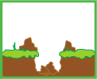
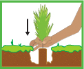
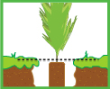
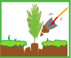
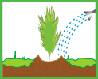

| 1 Aflojar la tierra en una superficie de 40 por 40 centímetros de profundidad. |
 |
| 2 En el centro abre un hueco tan ancho y profundo como la raíz de la planta. |
 |
| 3 Toma la planta de la parte más baja del tallo con dos dedos. No la maltrates ni toques la raíz. |
 |
| 4 Ponla en el hueco al ras de suelo. |
 |
| 5 Cubre la raíz de la planta con tierra. |
 |
| 6 Compacta la tierra con las manos, no debe quedar ni muy floja, ni muy apretada. |
|
| 7 Haz un muro o canaleta alrededor de la planta, para facilitar la retención de agua. Riega abundantemente. |
 |